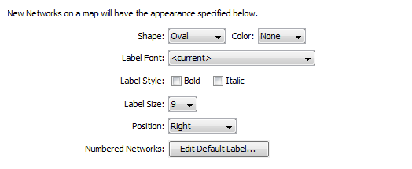

When devices and networks are first added to the map, InterMapper shows devices as rectangles and networks as ovals.
Use the Device Defaults and Network Defaults Preferences to change the default appearance of devices and networks.
Note: The Device Defaults and Network Defaults Preferences are identical in appearance and function. One affects the default appearance of devices, while the other affects the default appearance of networks.
The defaults for devices are shown below:
The defaults for a network are shown below:

The Network Defaults Panel
To view and edit the default Device and Network parameters:
|
Shape |
Choose a default shape for the device or network from the dropdown menu. |
|
|
Color |
Choose a default color for the device or network from the dropdown menu. |
|
|
Choose a default font for the device or network's label. |
||
|
Choose a default font size for the device or network's label. |
||
|
Choose a default position for the label text, relative to the device
or network icon. |
||
|
Set default labels for numbered and unnumbered networks, as described in Editing Labels. |